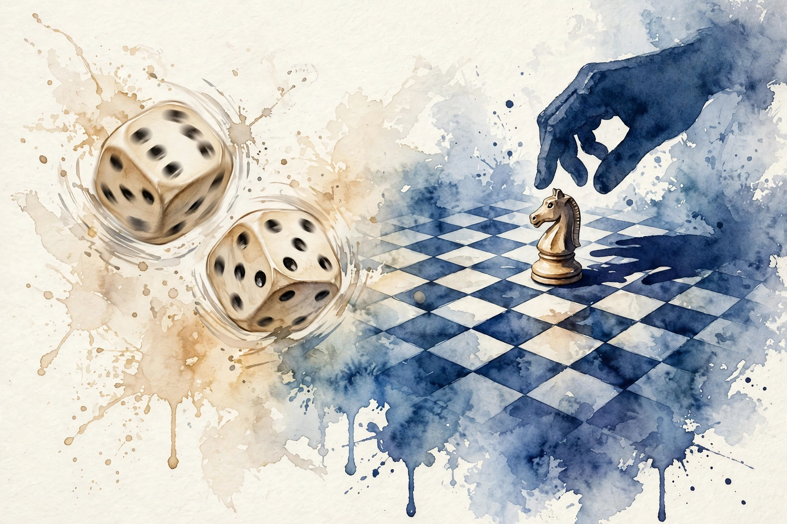

Naval Ravikant · The Luck Ladder · Companion
Making Money Isn't About Luck
Why making money is a skill, not a lottery: the four kinds of luck from blind fortune to unique character, the 999-universe standard, the deep-sea diver, two destroyed fortunes, and wealth that stacks one chip at a time.

Illustration. From dice to chess: replacing chance with skill. AI-generated watercolor made for this page.
Watch. The official Naval podcast episode video. Use the chapter menu above to jump to any section of this companion as you listen.
The Wisdom Index: every nugget in this companion
00:00
Become the kind of person
The thesis is blunt: making money is not about luck. "It's about becoming the kind of person that makes money." Naval likes the thought experiment: drop him on a random street in any English-speaking country with nothing, and within 5 to 10 years he would be wealthy again, because the skill set travels and anyone can develop it.
The standard is deterministic: wealthy by skill in 999 of 1,000 universes, not wealthy in the 50 where you got lucky. Factor luck out entirely.
In 1,000 parallel universes, you want to be wealthy in 999 of them.
Naval Ravikant, from the episode
999 out of 1,000 universes
The target: wealthy by skill in nearly every universe, not wealthy by luck in a few.
Source. Episode: the 1,000 parallel universes with 999 wealthy outcomes.
Wisdom nugget 1
Source factBuild the person, not the lottery ticket
What happened. Naval claims wealth is a portable skill set and sets the 999-of-1,000-universes bar for a luck-free plan.
Why it matters. It moves the goal from one big win to an identity that wins repeatedly under different draws.
Principle. Ask of every money plan: does this work in 999 universes, or only in the lucky 50?
00:03
Four kinds of luck
The taxonomy comes from Marc Andreessen's blog post on luck and the entrepreneur. First, blind luck: fortune, fate, completely out of your control. Second, luck from hustling: persistence, hard work, motion. Run around generating energy and opportunities get stirred up, like mixing a petri dish or a batch of reagents to see what combines. "luck will find you".
Third, luck from preparation: skill makes you sensitive to lucky breaks. The expert notices the opening in their field that everyone else walks past. Fourth, the weirdest and hardest: luck from your unique character. Build a one-of-one brand and mindset, and luck finds you.
The four kinds of luck
From Marc Andreessen's essay on luck and the entrepreneur, as retold in the episode. Climb the ladder.
Source. Diagram of the episode's four kinds of luck, credited to Marc Andreessen's essay.
Illustration. The petri dish: hustle stirring up combinations until luck finds you. AI-generated watercolor made for this page.
Wisdom nugget 2
Source factClimb the luck ladder
What happened. Naval ranks the four lucks from blind fortune up to character-driven attraction, and says the fourth is the one to aim for.
Why it matters. Most people wait at level one. Every level up is available to anyone willing to move, learn, or differentiate.
Principle. Stop praying for level one. Hustle for level two, study for level three, and differentiate for level four.
00:06
The deep-sea diver
The diver story makes level four concrete. Imagine you are the best deep-sea diver in the world, known for dives nobody else dares. By sheer blind luck, someone finds a sunken treasure ship and cannot reach it. Their luck just became your luck: they come to you, and you get paid, maybe half the treasure.
The finder got lucky. You did not. "You created your own luck." You positioned yourself to capitalize on luck nobody else could touch, or to attract it where nobody else created the opportunity.
Illustration. From dice to chess: replacing chance with skill. AI-generated watercolor made for this page.
Wisdom nugget 3
Source factPosition beats prayer
What happened. Naval shows that the diver's payout looks like luck but is really positioning: a unique capability meeting a random event.
Why it matters. You cannot control the treasure ship. You can control being the only diver.
Principle. Build the rare capability first. The random events are already happening. They just need someone ready.
00:08
Why 999 is not impossible
Nivi pushes back: 999 sounds too good to be true. Naval answers with his own file. He started as a poor kid in India, so the starting-circumstances excuse does not impress him. He grants the prerequisites: limbs, mental faculties, an education, a functioning body and mind, which anyone hearing the episode presumably has.
Then the bad-luck ledger. The first little fortune he made, he lost in the stock market. The second, he should have made but got cheated by business partners. The third time was the charm, and even that came as a slow, steady struggle, never one giant payout. Bad luck happened. The skill set outlasted it.
Toy: the luck audit
Which kind of luck is your plan relying on? Pick the statement closest to your strategy.
Wisdom nugget 4
Source factSurvive your bad luck
What happened. Naval lists two destroyed fortunes before the third worked, and says none of his wealth came from one giant payout.
Why it matters. The 999-universe claim survives contact with real bad luck. Skill compounds. Luck just visits.
Principle. Expect to lose fortunes one and two. Keep the skill set intact and keep playing. The third attempt is the charm.
00:11
Wealth stacks one chip at a time
The closing picture: wealth stacks up chip by chip. More options, more businesses, more investments, more things you can do. Nenad, the video maker illacertus, is the live example: no single video will shower him with riches, but a lifetime of learning, reading, and creating compounds.
And the definition of the finish line: enough wealth to retire into freedom. Not retirement as idleness, but as control: no place you must be, nothing you must do, no boss, your own hours. The internet made opportunities massively abundant. Naval says he has too many ways to make money and not enough time, with opportunities pouring out of his ears.
Wisdom nugget 5
Source factStack chips, ignore jackpots
What happened. Naval says his wealth came from many small things piling up, and defines retirement as freedom from obligation, not from work.
Why it matters. Jackpot thinking produces lottery behavior. Chip thinking produces portfolios.
Principle. Add one chip per quarter: an option, a business, an investment, a skill. Let the pile do the talking.